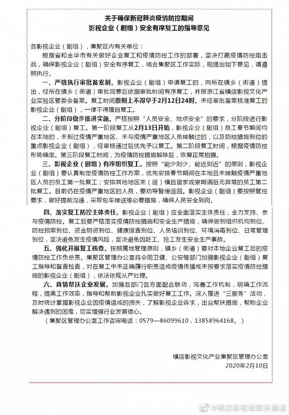

特别报道 | 小哥不够用，物流配送复工不易
原文链接 备份链接 《第一财经》YiMagazine告读者 _ _ _ 因疫情持续，杂志在印刷和物流配送等环节受到很大影响，2月刊肯定已经无法按时出版。 《第一财经》YiMagazine编辑部因此决定将2020年2月刊、3月刊合并出版。合 …
王一博所在的《有翡》剧组此前宣布停工（图源：电视剧《有翡》官方微博）
“
虽然剧组复工踊跃，但短期来看，距离真正的复工还需要时间。
”
2月10日，横店影视集聚区管理办公室下发关于确保新冠肺炎疫情防控期间影视企业（剧组）安全有序复工的指导意见。当中提到，第一阶段复工时间原则上不早于2月12日24时，且企业、剧组需经审批备案后才能复工。2月13日是横店复工首日，记者致电横店影视集聚区管理办公室，但工作人员均表示拒绝接受任何采访。
按照指导意见，横店影视城将分成三阶段逐步复工。春节期间，员工均留在横店，未到过疫情严重地区、未与疫情严重地区人员接触，且防控措施到位的重点影视企业（剧组）可以优先复工。第二阶段复工时间，根据疫情防控形势确定。第三阶段复工时间，要等到浙江全省疫情防控措施解除后，才能恢复正常拍摄。复工流程和其他工业企业复工的程序相似，首先剧组要上交材料、健康证明，并上报有关部门审批。审批通过后，再按照管控要求组织复工。

图源：横店影视城娱乐频道
但作为特殊行业，剧组人员密集、演员在拍摄期间很难带口罩，横店复工究竟安全吗？如果不能按时复工，对于档期衔接紧、停工期间开支大、签署明确上映时间合同的企业、剧组，又该如何减少违约成本、避免损失？
根据横店影视集聚区管理办公室此前的回应，春节期间全程留在横店的约有6000人，100余个剧组。目前来看，剧组对于复工相当踊跃，2月3日起就有不少申请，但截至11日尚未有申请通过。
13日上午，梨视频探访横店影视城。从视频中看，横店内演员服务部门口及内部空无一人，影视城内也少有人走动。一名群众演员表示，他未曾在任何工会演员群内收到复工的通知，只是从网上听说了复工的时间。而之前提到的横店为群众演员提供生活补助，实际上只有群众演员和前景演员可以收到补贴，特约演员则不在补助的列表中，最终收到补助的群演约有1000多人。另一名群众演员则表示，他在群里得到了复工的通知。有剧组发布招募称，可以给群众演员开100加10的工资，即超一个小时加十元。
疫情也波及到了横店影视城的生活区域，在横店的几处地标，比如横漂广场、横漂大酒店、万盛映像电影主题街，聚集的人群也不算多。街道两旁的商铺大多处于关闭状态，仅有几家小超市、水果店开门迎客。这位演员在直播中表示，横店的菜市场大年初一仍在开门营业，后来才逐渐规范起来，要求测体温、戴口罩。开门时间也进行了调整，目前仅在下午1点到4点营业，其余时间处在关闭状态。
但不同于横店内的其他商铺，对于剧组来说，停一天拍摄就意味着要承担一天损失。即使不算上主要演员的酬劳，光是房租、场地、机器、人员工资，一天的固定支出就已经超过百万。目前，已经爆出停工消息的剧组有《有翡》《谢谢你医生》《大江大河2》等，都是大剧组、大投资。对于这部分剧组，应该怎么尽量避免损失？
《有翡》剧照（图源：腾讯视频）
韬安律师事务所的刘芳律师认为，若确实因疫情无法按约履行合同，可以主张不可抗力以免除违约责任。在2月11日全国人大常委会法工委就疫情防控有关法律问题答记者问里，就提到新型冠状病毒感染肺炎疫情“属于不能预见、不能避免并不能克服的不可抗力。”在大经济条件偏向认定不可抗力的情况下，可以主张变更合同或解除合同。但对于签订时间发生在疫情期间，及签订时可以预见疫情造成影响的合同，则不得主张免除延迟履行的违约责任。
而在横店，其实场地费已经被免除。根据2019年12月横店发布的公告，影视城内现有的100个摄影棚，已经向电影及现代、当代、科幻题材类型的影视剧组免收租赁费。对于在横店拍摄的剧组来说，占据支出一大部分的场地租金或许不用承担。此外，横店办公室还表示，为了进一步帮扶剧组尽快复工，地方政府层面还会出台一些优惠措施，包括资金补助。横店也会给予摄影棚、餐饮、住宿上的优惠。比如酒店免部分房费，景区不收费等。为了保证拍摄安全，针对演员不能带口罩的情况，考虑不多于20人同时开拍。按照“能少则少、能近则近”的原则，目前仍在疫情严重地区的人员，会劝导暂缓返回。
对于档期紧的演员来说，或许也会因为疫情造成后期拍摄时间上的重叠。刘芳律师提到，疫情发生后，就有演员向她咨询相关问题，在2月份的剧组已经被叫停的情况下，应该如何处理延期拍摄的合同和3月即将开拍的合同？刘芳认为，如果艺人因自身档期上的困难导致另一合同无法履行，恐怕难以对抗该合同的相对人。因为在后的合同，并不因之前的不可抗力而“自动”延期或产生违约免责效果。在此情况下，艺人应该与双方充分沟通、协调，尽可能达成补充协议调整档期。她回答记者，如果实在难以协商，则需要根据自己的参与程度、后续影响、违约条件等做出判断，法院也会考虑疫情因素酌情处理。但从她的观察来看，大部分片方都同意达成补充协议，愿意一同承担损失，演员的档期协调也相对灵活。
总的来说，疫情虽然会打乱部分拍摄的节奏，但不会造成大面积的误工。影视策划人谢晓虎认为，行业的黄金开机时间是4到9月，春节期间开工的剧组不算多。且按照业内普遍的工作状态，大部分能够在春节之前杀青的剧组，已经尽量在春节前结束拍摄。而在横店原地待命的剧组，如今已经具备复工重新拍摄的条件。对于大中型影视公司和剧组来说，复工之后如何协调后续费用支出、安排主创演员的档期、保证剧作的完整度才是后续需要解决的关键问题。
未经授权 禁止转载

原文链接 备份链接 《第一财经》YiMagazine告读者 _ _ _ 因疫情持续，杂志在印刷和物流配送等环节受到很大影响，2月刊肯定已经无法按时出版。 《第一财经》YiMagazine编辑部因此决定将2020年2月刊、3月刊合并出版。合 …
原文链接 备份链接 面对依然紧张的防疫形势，上海的街道、居民区、楼宇不断放出防疫大招，以上海人特有的智慧筑起“上海堡垒”，守卫这座城市。 文 | 陈 冰 2月10日是上海正式意义上的“复工日”，在经历了一个史无前例安静春节之后，人员返程、 …
原文链接 备份链接 全文共2913字，阅读大约需要7分钟 文/刘楚玥 编辑/陈淼 疫情滔滔，牵动着每一个中国人的心。医疗物资告急，口罩、护目镜和防护服一时成为最难买的“硬通货”。沧海横流方显英雄本色，在抗疫一线，无数医护人员挺身而出，勇敢 …
原文链接 备份链接 以下文章来源于AI财经社 ，作者AI财经社作者 开工前最忧伤的段子可能是，“今天戴着口罩去买口罩，口罩没买到，还损失了一个口罩。” 2月10日起，部分企业陆续复工，宅在家里即为国家做贡献的使命宣告终结。当下的主要矛 …
原文链接 备份链接 _ 疫情首先冲击劳动密集型的电子组装制造工厂，引发供应链上的各种连锁反应，可能在短期内延缓中国电子信息制造产业飞奔的脚步，政府、行业协会和企业应需要多种形式的互助和自救 _ 文 |《财经》记者 周源 陈潇潇 编辑 | …